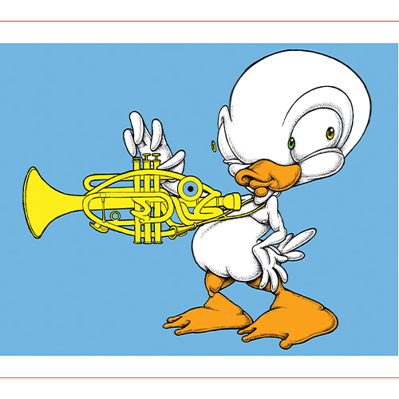
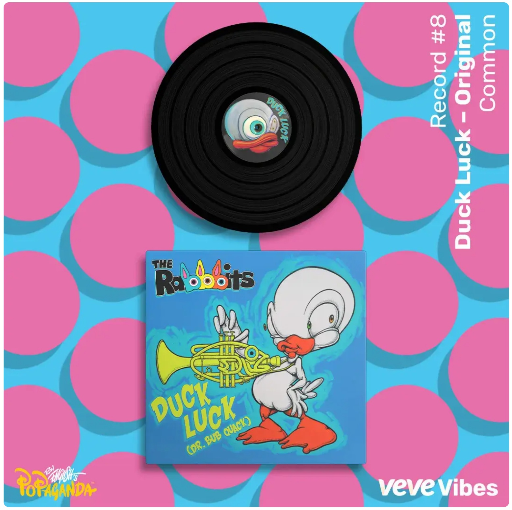

Notes
This composition was later reproduced by the artist as a limited-edition print in the Vinyl Chord: A Revolutionary Record Store series.
This image appears on VeVe’s digital collectible page for Ron English’s Record #8 - Duck Luck - Original.
Ancillary Documentation

